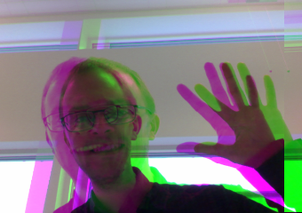
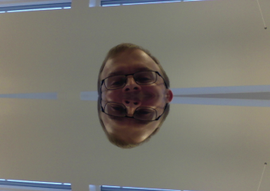

In this task you will use the
Canvas
getImageData
API to read each pixel of your video and write it back using canvas.putImageData
Your goal is to:
The result should look something like the pixture below:
Bonus task: Can you make you video look like this:
Or like this?
